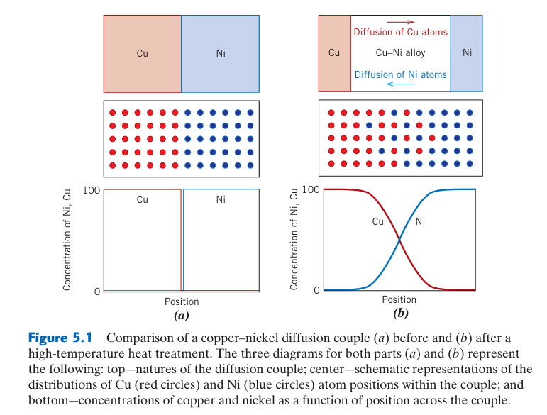
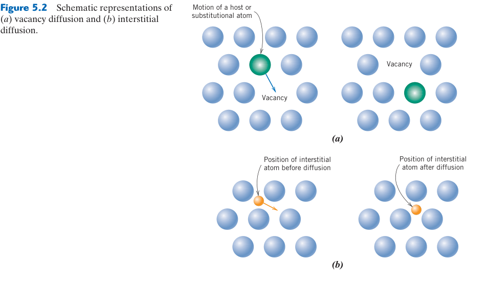
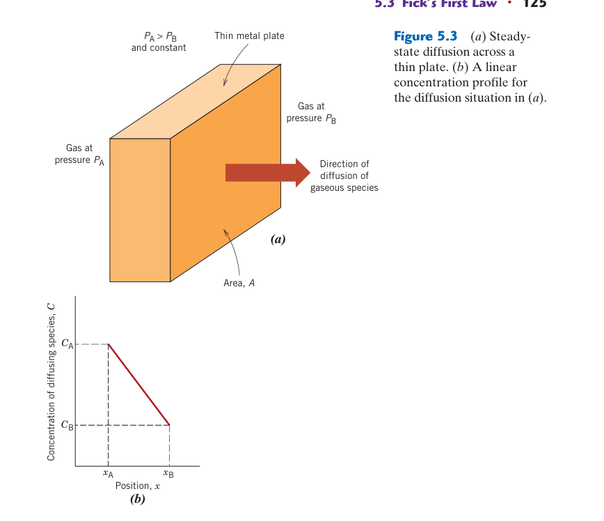
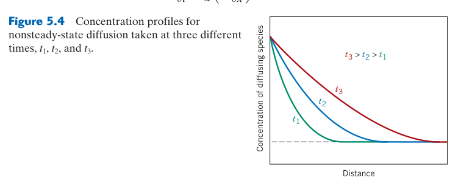
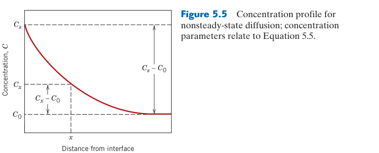
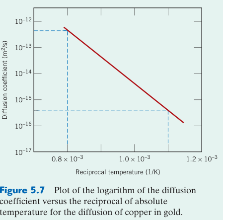
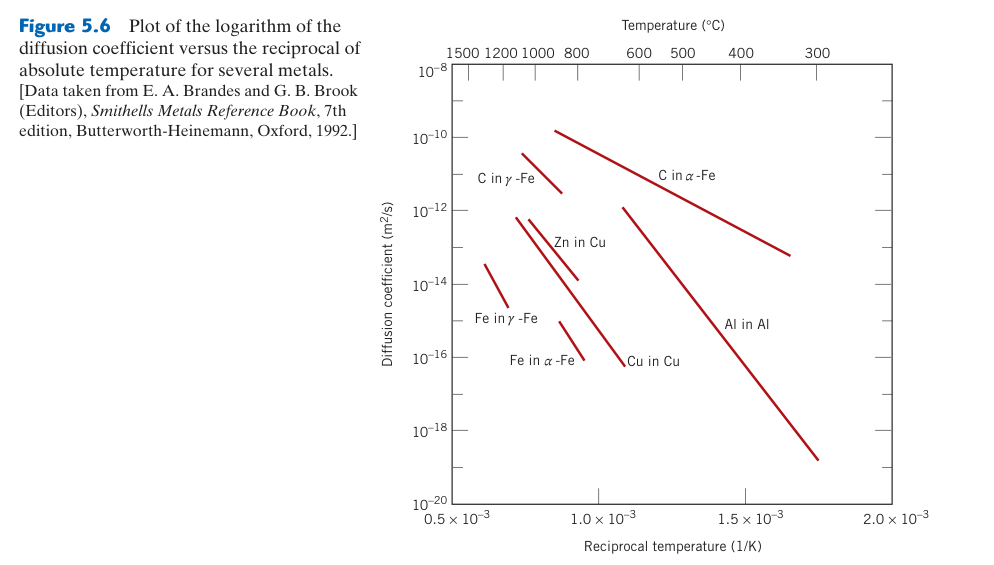

擴散
Diffusion
本章預覽
📌 本章要解決的核心問題
原子在固體中如何移動？為什麼 滲碳可以在鋼的表層產生硬化層而心部保持韌性？為什麼積體電路的鋁導線會因「電子風」而失效？本章將擴散從「原子隨機跳動」的微觀圖像連接到「濃度隨時間變化」的巨觀工程方程式——Fick 第一和第二定律。擴散是所有固態製程（熱處理、析出硬化、燒結、氧化）的物理基礎。
🔑 關鍵概念
- 擴散的驅動力：濃度梯度（更根本是化學位梯度）——原子從高濃度流向低濃度
- 空位擴散：原子跳入鄰近空位——需要空位形成能+遷移能，$Q_d = Q_v + Q_m$
- 間隙擴散：小原子在間隙間跳動——僅需遷移能，比空位擴散快 $10^3$–$10^6$ 倍
- Fick 第一定律：$J = -D\frac{dC}{dx}$——穩態擴散，通量正比於濃度梯度
- Fick 第二定律：$\frac{\partial C}{\partial t} = D\frac{\partial^2 C}{\partial x^2}$——非穩態擴散
- Arrhenius 行為：$D = D_0\exp(-Q_d/RT)$——擴散係數隨溫度指數上升
- 誤差函數解：$\frac{C_x-C_0}{C_s-C_0} = 1 - \text{erf}(\frac{x}{2\sqrt{Dt}})$—— 滲碳濃度分布
- 擴散距離 ∝ √Dt：加倍距離需四倍時間
🧭 本章推理地圖
- 熱振動提供跨越能障的機會（§5.1），空位或間隙提供位置（§5.2）→ 原子能在固體中隨機跳躍（§5.1–§5.2）。
- 化學位或濃度不均勻（§5.1、§5.7）→ 兩方向跳躍不再抵消 → 產生淨擴散通量（§5.3）。
- 穩態下以 Fick 第一定律連結梯度與通量（§5.3）；濃度隨時間改變時結合質量守恆 → Fick 第二定律（§5.4）。
- 擴散係數由跳躍能障控制並遵循 Arrhenius 關係（§5.5）→ 溫度、物種與快速路徑改變擴散速率（§5.5）。
- 由邊界條件、$D$ 與時間預測濃度分布（§5.4）→ 設計滲碳與半導體摻雜的熱預算（§5.6）。
先備知識橋接
- Ch4：空位平衡濃度 $N_v = N\exp(-Q_v/kT)$——空位擴散需要鄰近空位，空位濃度直接決定取代型擴散速率
- Ch4：間隙位置與間隙原子——小原子（C, N, H）走間隙路徑，活化能僅需遷移能
- 微積分：偏微分方程基本概念——Fick 第二定律是擴散方程，erf 是其特定邊界條件下的解析解
- 統計概念：隨機漫步（random walk）——擴散的 $\sqrt{t}$ 依賴來自隨機過程的統計本質
隨機原子跳躍如何產生定向輸送
單一原子的熱運動沒有偏好的方向；在均勻材料中，它向左與向右跳躍的機率相同，長時間平均後沒有淨通量。但若左側濃度較高，左側可供跳躍的原子數較多，即使每顆原子仍做隨機漫步，從左向右穿越某一平面的總數仍較大，形成由高濃度向低濃度的淨擴散。這是「微觀隨機、巨觀有方向」的核心。
自擴散、互擴散與示蹤
自擴散發生在純元素中，化學成分看似不變，可用放射性或穩定同位素示蹤原子的交換；互擴散則發生在多成分材料中，各元素重新分布並使濃度剖面隨時間改變。擴散偶實驗把兩種成分不同的材料緊密接合後退火，再量測跨界面的濃度，即可反推出互擴散係數。
熱力學驅動力不只濃度
嚴格而言，原子受化學勢梯度驅動，而非永遠受濃度梯度驅動。在理想稀溶液中兩者方向通常一致，Fick 定律很好用；在非理想合金、相分離區或具有應力與電場時，活度係數、彈性能與電位也會改變通量，甚至出現看似由低濃度向高濃度的上坡擴散。
先用擴散長度判斷問題尺度
隨機漫步的典型距離與 $\sqrt{Dt}$ 同階，因此製程時間增加四倍，擴散深度大約只增加兩倍。這個尺度估算可先判斷半無限體假設是否合理，也能快速檢查答案：若計算得到的滲碳深度遠大於零件厚度，邊界條件便不可能仍視為半無限。
5.1 擴散的基本概念與機制

擴散（diffusion）是原子、離子或分子在材料中由熱能驅動的淨遷移。在巨觀尺度，擴散使濃度梯度隨時間均勻化——就像一滴墨水滴入水杯中逐漸擴散，最終整杯水變成均勻的淡色。在微觀尺度，每個原子進行隨機跳動——但因為高濃度區域有更多原子向低濃度方向跳動，淨通量總是從高濃度指向低濃度。更根本的驅動力是化學位梯度（chemical potential gradient）——原子從化學位高的區域流向化學位低的區域。在大多數情況下，化學位梯度與濃度梯度方向一致。
擴散的兩個必要條件缺一不可：(1) 熱激活的原子跳動——原子必須有足夠的熱能以克服遷移能障 $Q_m$（沒有熱能，原子被「凍結」在晶格位置上，$D$ 接近零）；(2) 濃度梯度——如果濃度均勻，原子在各方向的跳動機率相同 → 無淨通量。實際的擴散製程（ 滲碳、滲氮、退火）同時需要高溫（熱激活）和濃度梯度（驅動力）。
沒有擴散，就沒有：(1) 滲碳/滲氮——碳/氮原子無法從表面進入鋼材內部；(2) 均質化退火——鑄錠成分偏析無法消除；(3) 析出硬化——溶質原子無法聚集形成奈米析出物；(4) 燒結——粉末顆粒之間無法形成結合頸；(5) 氧化——金屬無法透過氧化層繼續氧化。理解擴散，就理解了為什麼熱處理需要高溫和時間。
擴散速率包含「有路」與「跳得動」
置換型原子透過空位擴散時，總速率同時取決於空位濃度與原子跨越遷移能障的頻率。升溫一方面增加平衡空位數，另一方面提高成功跳躍機率，所以置換擴散的活化能常包含空位形成能與遷移能。淬火保留的過量空位可暫時加速低溫擴散，但空位會逐漸湮滅於差排、晶界與表面。
間隙擴散為何通常較快
C、N、H 等小原子可在相鄰間隙位置間跳躍，不必等待空位抵達，而且可用位置數通常較多，因此遷移活化能往往較低。然而「較快」不是無條件結論：間隙尺寸、晶格結構、溶質與陷阱的結合，以及材料中的第二相，都可能顯著降低有效擴散率。
直接交換為何罕見
若兩個正常晶格位置上的原子直接互換，過渡狀態需要同時嚴重擠壓周圍原子，能障非常高。環狀交換雖可降低部分擠壓，仍通常不如空位機制有利。因此大多數金屬的置換擴散以空位機制主導；若材料受輻照或具有高濃度非平衡缺陷，間隙原子與缺陷團簇機制才可能變重要。
晶體方向與跳躍關聯
每次跳躍不完全彼此獨立：原子跳入空位後，下一步跳回原位的機率可能較高，需以相關因子修正簡單隨機漫步模型。在立方晶體中巨觀擴散常近似各向同性；在 HCP、層狀晶體或單晶中，不同方向的可用通道與能障不同，擴散係數應視為張量而非單一數值。
5.2 空位擴散與間隙擴散



空位擴散（vacancy diffusion）：原子跳入相鄰的空位——原子的淨移動方向與空位的淨移動方向相反。這是自我擴散（self-diffusion）和取代型雜質擴散的主要機制。總活化能 $Q_d = Q_v$（空位形成能）+ $Q_m$（遷移能）。因為需要空位形成（$Q_v$ ~0.5–2 eV），空位擴散的活化能較高（100–300 kJ/mol），速率較慢。
間隙擴散（interstitial diffusion）：小的間隙原子（C, N, H 在金屬中）從一個間隙跳到另一個——不需要空位。活化能僅為 $Q_m$，擴散速率遠快於空位擴散。1000°C 時碳在 γ-Fe 中的 $D$ 約為鐵自擴散的 $10^6$ 倍——這就是為什麼 滲碳可以在數小時內完成。
直覺上 FCC 更密（APF 0.74 vs 0.68），碳應該更難移動。但數據顯示碳在 BCC 中的 $Q_d$ (80 kJ/mol) 遠小於 FCC 中的 (148 kJ/mol)。原因是 BCC 的間隙通道瓶頸尺寸更大——碳原子在 BCC 中的遷移路徑瓶頸半徑約 0.036 nm，在 FCC 中僅約 0.025 nm。這是晶體結構影響擴散的經典案例——不是看「平均密度」，而是看「關鍵瓶頸」。
📝 範例 5.1：比較兩個溫度下的擴散係數
題目：碳在 γ-Fe 中 $D_0 = 2.3 \times 10^{-5}$ m²/s, $Q_d = 148$ kJ/mol。求 900°C 和 1100°C 時的 $D$。
解：900°C (1173 K)：$D = 2.3\times10^{-5}\exp(-148000/(8.314\times1173)) = 7.1\times10^{-12}$ m²/s。
1100°C (1373 K)：$D = 2.3\times10^{-5}\exp(-148000/(8.314\times1373)) = 5.4\times10^{-11}$ m²/s。
溫度僅升高 200°C，$D$ 增加 ~7.6 倍——擴散係數對溫度極其敏感。
通量的符號與單位
擴散通量 $J$ 表示單位面積、單位時間穿過參考面的物質量，常用 mol·m$^{-2}$·s$^{-1}$ 或 atoms·m$^{-2}$·s$^{-1}$。$J=-D\,dC/dx$ 中的負號表示通量指向濃度降低方向；若先自行定義正方向與濃度梯度，負號便能自動給出流動方向，不應把它當成速率為負。
穩態不是「濃度不變」
穩態的意思是任一位置的濃度不再隨時間改變，亦即進入控制體的量等於離開的量；系統仍可持續有非零通量。若 $D$ 為常數且沒有反應或生成項，一維濃度剖面為直線。若截面積、擴散係數或溶解度隨位置改變，剖面不再線性，但串聯各層的總通量仍必須相同。
多層材料的擴散阻力
對厚度 $L_i$、擴散係數 $D_i$ 的多層膜，可把每層視為阻力 $L_i/D_i$；總阻力相加後求通量。若界面兩側平衡濃度不連續，還需加入分配係數。這種觀念可分析鍍層、氧化膜、食品包裝與複合膜：最薄的層不一定控制，$L/D$ 最大的層才可能是速率瓶頸。
擴散率與滲透率不可混用
擴散係數描述粒子在材料內的移動能力；氣體穿膜的滲透率通常等於擴散係數乘上溶解度。某氣體即使在聚合物中移動快，若幾乎不溶入材料，總滲透量仍可能很小。工程選材時必須確認資料表給的是 $D$、溶解度或 permeability，並保持濃度與壓力單位一致。
5.3 Fick 第一定律——穩態擴散
Fick 第一定律描述穩態擴散——濃度分布不隨時間改變。擴散通量 $J$（單位時間通過單位面積的物質量，單位 kg/m²·s 或 atoms/m²·s）正比於濃度梯度：$J = -D\frac{dC}{dx}$。負號是關鍵——它表示擴散沿濃度下降方向進行（從高濃度到低濃度）。穩態的物理條件是：進入和離開系統中任何一個體積元素的通量相等——沒有「累積」或「消耗」，濃度分布是凍結的。
在穩態下，濃度梯度是線性的（只要 $D$ 是常數）。對於厚度為 $\Delta x$ 的平板，兩側濃度分別為 $C_1$ 和 $C_2$：$J = -D\frac{C_2 - C_1}{\Delta x} = D\frac{C_1 - C_2}{\Delta x}$。這個簡單的線性關係使穩態擴散成為最容易計算的擴散問題。
工程應用——氣體透過薄膜
氫氣純化是 Fick 第一定律的經典工業應用。鈀（Pd）膜對氫氣具有獨特的選擇性滲透——H₂ 分子在 Pd 表面分解為 H 原子 → H 原子溶解並擴散通過 Pd 膜 → 在另一側重新結合為 H₂。高壓側（不純氫）→ 低壓側（超高純氫，>99.999%）。擴散通量 $J = \frac{D(C_1 - C_2)}{\Delta x}$，其中 $C_1$ 和 $C_2$ 是膜兩側的氫濃度（取決於氣體壓力的平方根——Sieverts 定律：$C \propto \sqrt{P}$）。
另一個重要應用是食品包裝的氧氣阻隔：高分子膜（如 EVOH——乙烯-乙烯醇共聚物）的氧氣滲透率取決於氧分子在膜中的溶解度和擴散係數。Fick 第一定律直接計算給定膜厚下的氧氣滲透速率——這決定了包裝食品的保質期。
穩態條件成立的關鍵是邊界條件不隨時間變化。氫氣純化器中，高壓側和低壓側的氫氣壓力保持恆定 → 膜內濃度梯度恆定 → 穩態（$J$ 不隨時間變化）。但 滲碳初期，鋼件表面剛接觸高碳氣氛 → 表面碳濃度從 $C_0$ 逐漸上升到 $C_s$ → 非穩態 → 必須用 Fick 第二定律。判斷準則：邊界條件是否隨時間變化？不變 → 第一定律；在變化中 → 第二定律。
📝 範例：穩態擴散——計算氫氣通過鈀膜的滲透速率
題目：5 mm 厚的鈀膜在 600°C 用於純化氫氣。高壓側 H 濃度 $C_1 = 2.0$ kg/m³，低壓側 $C_2 = 0.05$ kg/m³。$D = 1.6 \times 10^{-8}$ m²/s。求穩態擴散通量 $J$ 和每小時通過 1 m² 膜面積的氫氣質量。
解：$J = D\frac{C_1 - C_2}{\Delta x} = 1.6\times10^{-8} \times \frac{2.0 - 0.05}{5\times10^{-3}} = 1.6\times10^{-8} \times 390 = 6.24\times10^{-6}$ kg/m²·s。
每小時每平方米：$6.24\times10^{-6} \times 3600 = 0.0225$ kg = 22.5 g/h·m²。若膜面積為 10 m²，每小時可純化 ~225 g 氫氣。
第二定律來自質量守恆
取一個微小控制體，左側流入與右側流出的通量差必須等於控制體內濃度的累積。把 Fick 第一定律代入守恆式，即得 $\partial C/\partial t=\partial(D\,\partial C/\partial x)/\partial x$；只有當 $D$ 不依位置或濃度改變時，才可簡化為 $D\,\partial^2C/\partial x^2$。背公式前先確認這項假設。
解題真正關鍵是初始與邊界條件
相同微分方程會因條件不同而有完全不同的解。固定表面濃度適合氣氛持續供應溶質的滲碳；有限劑量薄膜擴散較接近高斯解；兩個半無限固體接觸則形成擴散偶。寫出初始濃度、表面條件、對稱面或無通量邊界，往往比代入誤差函數更重要。
誤差函數解怎麼讀
固定表面濃度的解以無因次變數 $z=x/(2\sqrt{Dt})$ 表示，意義是所有時間的濃度曲線經距離除以 $\sqrt{Dt}$ 後會重疊。$z$ 小代表靠近表面，濃度接近 $C_s$；$z$ 大代表深處尚未受影響。查表或計算反誤差函數時，應先把濃度比整理到 0 至 1 並檢查物理端點。
半無限體與數值解
只要受擴散影響的深度遠小於試件厚度，遠端邊界就可近似在無限遠；當 $\sqrt{Dt}$ 已接近厚度，兩側濃度場會互相影響，解析解便失效。遇到有限尺寸、時間變動表面濃度、濃度相依 $D$、多相反應或複雜幾何時，有限差分或有限元素法通常更可靠，但仍須滿足質量守恆與合理網格收斂。
5.4 Fick 第二定律——非穩態擴散
大多數實際情況是非穩態的——濃度隨時間和位置同時變化：$\frac{\partial C}{\partial t} = D\frac{\partial^2 C}{\partial x^2}$（設 $D$ 與濃度無關）。對於半無限長固體、表面濃度恆定 $C_s$、初始均勻濃度 $C_0$ 的邊界條件，解為：
從 $x/(2\sqrt{Dt})$ 的形式可直接看出：特徵擴散距離 $x \propto \sqrt{Dt}$。要讓擴散距離加倍，需要四倍的時間。這解釋了為什麼高溫製程遠比低溫有效——$D$ 隨溫度指數上升，比被動等待更有效率。
誤差函數的物理直覺
erf(z) 的形狀值得建立直覺：$z = 0$ → erf(0) = 0 → $C_x = C_s$（表面濃度 = 設定值）；$z = 0.5$ → erf = 0.52 → $C_x \approx C_0 + 0.48(C_s - C_0)$（濃度約在半途）；$z = 1.0$ → erf = 0.84 → $C_x \approx C_0 + 0.16(C_s - C_0)$（濃度已接近初始值）；$z = 2.0$ → erf = 0.995 → 濃度幾乎等於 $C_0$（擴散前緣還未到達）。實際上，$z = 2$ 常被用作擴散影響深度的工程判斷：$x_{affected} \approx 4\sqrt{Dt}$。超過這個深度，濃度變化小於 0.5%，可忽略。
這個 $\sqrt{Dt}$ 依賴性是擴散處理的時間成本核心：深度加倍需要四倍時間。在工業實務中，如果要將 滲碳層從 1 mm 增加到 2 mm（在相同溫度下），成本不是翻倍而是四倍。這就是為什麼工程師會優先考慮提高溫度（$D$ 指數增加）而非延長時間（僅線性獲益）。
一個常見的設計問題：「給定熱處理爐的溫度和氣氛，我需要處理多久才能達到指定的硬化層深度？」步驟：(1) 查出該溫度下的 $D$；(2) 設定目標濃度（如 0.4 wt% C）→ 計算 $z = \text{erf}^{-1}(1 - \frac{C_{target} - C_0}{C_s - C_0})$；(3) 從 $z = x/(2\sqrt{Dt})$ 解出 $t = x^2/(4z^2 D)$。注意：$t \propto x^2$——這就是 滲碳時間隨深度急劇增加的原因。對於極深 滲碳（>3 mm），可能需要數十小時甚至數天。
📝 範例 5.2： 滲碳處理的碳濃度分布
題目：鋼件初始 $C_0=0.20$ wt% C，表面保持 $C_s=1.00$ wt% C。950°C 處理 5 小時，$D = 1.5\times10^{-11}$ m²/s。求距表面 0.5 mm 處的碳濃度。
解：$z = x/(2\sqrt{Dt}) = 0.5\times10^{-3}/(2\sqrt{1.5\times10^{-11}\times18000}) = 5\times10^{-4}/(2\times5.2\times10^{-4}) = 0.48$。
erf(0.48) ≈ 0.5027。$C = 0.20 + (1.00-0.20)(1-0.5027) = 0.20 + 0.398 = 0.60$ wt% C。
答案：5 小時後距表面 0.5 mm 處碳濃度從 0.20% 提升到 0.60%——已接近共析成分（0.76% C），可在後續淬火中形成麻田散鐵硬化層。
Arrhenius 圖能讀出什麼
由 $\ln D=\ln D_0-Q_d/(RT)$ 可知，以 $\ln D$ 對 $1/T$ 作圖應近似直線，斜率為 $-Q_d/R$、截距為 $\ln D_0$。若使用常用對數，斜率需多除以 $2.303$。溫度必須用 K；活化能若用 J/mol 就配 $R$，若用 eV/atom 就配 $k$，混用是最常見的數量級錯誤。
$D_0$ 與 $Q_d$ 的物理意義
$Q_d$ 反映形成可移動缺陷與跨越遷移能障所需能量，決定曲線對溫度的敏感度；$D_0$ 包含跳躍距離、嘗試頻率、幾何與熵等因子。兩者並非完全獨立，不能只憑較大的 $D_0$ 判定擴散較快，必須在目標溫度計算完整 $D$。
同溫比較不如同相對溫度比較
原子移動能力與同系溫度 $T/T_m$ 高度相關。鋁在 500°C 已接近熔點的高比例，擴散相當活躍；鎢在同溫度仍處於低同系溫度，體擴散極慢。因此材料的熱處理與潛變溫度應以絕對溫度相對熔點判斷，而非只比較攝氏溫度。
快速路徑與短路擴散
晶界、差排核心與自由表面的原子排列較鬆散，遷移活化能通常低於完整晶格，形成短路擴散。低溫時體擴散很慢，這些少量路徑可能主導總輸送；高溫時體擴散快速增加，體積占比大的晶內逐漸占優。細晶材料因晶界面積大，晶界擴散與偏析效應尤其明顯。
5.5 影響擴散的因素


擴散係數 $D$ 不是材料的固定常數——它對溫度、晶體結構、微結構和擴散物種極為敏感。理解這些因素如何影響 $D$，是熱處理製程設計的核心。以下是五大因素的完整拆解。
| 因素 | 影響方式 | 典型量級 | 何時主導？ |
|---|---|---|---|
| ① 溫度 | $D = D_0\exp(-Q_d/RT)$，指數關係 | $T$ ↑20°C → $D$ ~2× | 永遠是最重要的因素 |
| ② 擴散物種 | 間隙 vs 取代型機制差異 | 間隙快 $10^3$–$10^6$× | 多物種同時擴散時 |
| ③ 晶體結構 | 堆積密度決定通道瓶頸 | BCC > FCC > HCP | 同材料不同相的比較 |
| ④ 晶粒大小 | 晶界面積 = 快速路徑佔比 | 細晶 $D_{eff}$ 明顯提升 | 低溫（$T < 0.5T_m$） |
| ⑤ 晶體缺陷 | 差排管線擴散 | 快 $10^3$–$10^4$× | 冷加工後、疲勞裂紋尖端 |
溫度——指數級的影響，永遠最重要
從 Arrhenius 關係 $D = D_0\exp(-Q_d/RT)$ 可以看出，$D$ 對 $T$ 的敏感度由 $Q_d$ 和絕對溫度共同決定。活化能越高 → $\ln D$ vs $1/T$ 的斜率越陡 → 溫度效應越劇烈。
工程規則：鋼的熱處理溫度每升高 ~20°C，$D$ 約加倍。這不是線性外推——若 900°C → 920°C 加倍，從 900°C → 960°C 就是 ~8 倍（三次加倍），從 900°C → 1000°C 可達 ~32 倍（五次加倍）。
實例：滲碳在 950°C 進行而非 850°C——因為 $D$ 差距可達 5–10 倍，所需時間差距也是 5–10 倍。工廠爐子每小時的運行成本遠高於多升 100°C 的電費，因此高溫短時 >> 低溫長時。
擴散物種——間隙 vs 取代型，速度差百萬倍
擴散機制決定活化能，活化能決定速率。小原子（C, N, H, O）走間隙路徑：活化能僅為遷移能 $Q_m$，不需要等待空位形成。大原子（Cr, Ni, Mn，以及 Fe 自我擴散）走空位路徑：活化能包含空位形成能 $Q_v$ + 遷移能 $Q_m$。
| 類型 | 活化能 $Q_d$ | 代表案例 | 相對速率 |
|---|---|---|---|
| 間隙擴散 | $Q_m$（~80–150 kJ/mol） | C 在 $\alpha$-Fe 中（80 kJ/mol） | 基準（快） |
| 取代型擴散 | $Q_v + Q_m$（~250–450 kJ/mol） | Ni 在 $\gamma$-Fe 中（283 kJ/mol） | 慢 $10^3$–$10^6$× |
工程後果：滲碳（碳的間隙擴散）可在數小時內完成；均質化退火需要合金元素（Cr、Ni、Mn）的取代型擴散——需數十小時。這就是為什麼鋼可以滲碳硬化但無法「滲鉻硬化」——鉻走空位路徑，太慢了。
晶體結構——BCC 比 FCC 快？關鍵在「瓶頸」不是「平均密度」
直覺上 FCC（APF 0.74）比 BCC（APF 0.68）更密 → 應該讓擴散更難。但實驗數據正好相反：BCC 中的擴散比 FCC 快。原因不在於整體堆積密度，而在於間隙通道的瓶頸尺寸——原子跳躍時必須穿過的最窄處。
碳原子（半徑 0.071 nm）在 BCC 結構中通過的間隙瓶頸半徑約 0.036 nm——勉強可過。FCC 的對應瓶頸僅 ~0.025 nm——碳原子需要更大的局部晶格膨脹才能跳過，活化能因此從 80 kJ/mol（BCC）升至 148 kJ/mol（FCC）。
判斷關鍵：擴散速率不看「平均有多少空間」，而看「遷移路徑上最窄的那一段有多寬」。這個原則對所有晶體擴散計算都適用——也是為什麼 HCP（最密堆積）的擴散通常最慢。
晶粒大小——晶界是高速公路，但只有低溫才看得見效果
晶界處原子排列鬆散、空位濃度高 → 擴散活化能大幅降低（$Q_{GB} \approx 0.5 Q_{lattice}$）。細晶材料晶界體積分率高 → 有效擴散係數 $D_{eff}$ 增加，因為原子有更多機會走「晶界快車道」。
關鍵溫度轉折：低溫（$T < 0.5T_m$）時體擴散被凍結（$D_{lattice}$ 極小），但晶界擴散仍在運作 → 晶界主導總物質輸送。高溫時體擴散指數上升 → 晶內體積佔比大 → 體擴散重新主導。因此在設計熱處理參數時，必須根據目標溫度判斷「誰在開車」。
奈米材料的放大效應：當晶粒尺寸縮至 ~10 nm，晶界體積分率可達 20–50%。$D_{eff}$ 可比單晶高數個數量級——這就是為什麼奈米粉末的燒結溫度比傳統粉末低數百度。
晶體缺陷——差排是原子運輸的「地下管線」
差排核心區域的原子排列極度扭曲，形成沿差排線的快速擴散通道（pipe diffusion），速率比體擴散快 $10^3$–$10^4$ 倍。差排密度越高 → 快速路徑越多 → 有效擴散越快。
工程實例：冷加工引入大量差排 → 後續退火時的析出動力學明顯加快（因溶質原子沿差排快速傳輸）。疲勞裂紋尖端的高密度差排區域 → 氫原子沿差排管線快速聚集到裂紋尖端 → 氫脆加速。這也是為什麼焊接後常需要除氫熱處理（hydrogen bake-out）——給氫原子時間擴散出去，但它們偏偏走差排快車道。
擴散路徑速率排名與活化能對照
| 路徑 | 活化能 | 主導溫度區間 | 典型應用場景 |
|---|---|---|---|
| 表面擴散 | $Q_{surf}$（最低） | 所有溫度（但路徑體積佔比極小） | 薄膜沉積、觸媒表面反應 |
| 晶界擴散 | $Q_{GB} \approx 0.5 Q_{lattice}$ | $T < 0.5T_m$ | 細晶材料熱處理、粉末燒結 |
| 差排管線擴散 | $Q_{pipe} \approx 0.4$–$0.7 Q_{lattice}$ | $T < 0.5T_m$ | 冷加工金屬退火、疲勞、氫脆 |
| 體擴散（晶格） | $Q_{lattice}$（最高） | $T > 0.5T_m$ | 高溫熱處理、潛變、均質化 |
| $D$（m²/s）量級 | 對應情境 |
|---|---|
| $10^{-9}$ | 液體中的擴散（室溫鹽水） |
| $10^{-14}$ | 固體接近熔點（~$0.9T_m$） |
| $10^{-20}$ | 室溫固體——擴散實質凍結 |
| $10^{-36}$ | 碳在 BCC 鐵中室溫——「宇宙年齡尺度」 |
| 如果你在… | 優先關注 | 其次 |
|---|---|---|
| 設計滲碳 / 滲氮製程 | 溫度（指數影響 → 時間） | 氣氛碳勢 → 表面濃度 $C_s$ |
| 選擇均質化退火參數 | 溫度 + 長時間（取代型慢） | 晶粒大小（晶界加速 + 晶粒成長取捨） |
| 分析奈米材料熱穩定性 | 晶界擴散（體積分率高） | 表面擴散（比表面積巨大） |
| 評估冷加工後退火行為 | 差排管線擴散 | 再結晶溫度 |
| 比較不同鋼種的熱處理 | 晶體結構（BCC vs FCC）+ 合金 $Q_d$ | 晶粒尺寸 |
預沉積、推進與接面深度
傳統半導體熱擴散常分兩步：預沉積在固定表面濃度下引入摻雜原子；推進則停止外部供應，在總劑量近似固定下使分布向內擴展。摻雜濃度等於背景濃度的位置定義電性接面深度。製程設計不只要求總劑量，還要控制表面濃度、梯度與接面位置。
離子佈植與熱擴散的分工
離子佈植可用加速能量控制平均深度、以劑量控制原子總數，且能經遮罩形成精細圖案；代價是碰撞會產生空位、間隙原子與局部非晶化。後續退火用來修復晶格並讓摻雜原子進入電活性位置，但也會使濃度剖面展寬，形成解析度與活化率之間的取捨。
真實擴散係數可能依濃度改變
高摻雜下，帶電缺陷濃度與費米能階改變，使 $D$ 不再是常數；佈植產生的過量間隙原子還可能造成短暫增強擴散。此時單一誤差函數只能作初估，先進製程需使用包含缺陷反應、聚集、電荷態與界面吸收的模型校正實驗剖面。
熱預算是整合概念
晶圓經歷多個升溫步驟，每一步都會對擴散產生累積貢獻，可粗略以 $\int D(T)\,dt$ 衡量。由於 $D$ 對溫度呈指數敏感，短暫高溫可能比長時間低溫影響更大。快速熱退火利用短時間高溫完成缺陷修復與活化，同時限制不希望的接面展寬。
5.6 半導體中的擴散——摻雜與積體電路製造

積體電路製造是擴散工程最精密的應用——在矽晶圓上以微米級精度控制摻雜劑的分布。矽晶圓的選擇性摻雜（selective doping）透過以下步驟實現：在晶圓表面生長 SiO₂ 阻擋層（摻雜劑在 SiO₂ 中的擴散極慢 → 天然的擴散阻擋層）→ 微影製程開窗（用光阻定義圖案，蝕刻掉特定區域的 SiO₂）→ 將晶圓暴露於含摻雜劑的高溫爐管中 → 摻雜劑原子僅在無 SiO₂ 保護的區域擴散進入矽中。
熱擴散摻雜的兩步驟策略：預沉積 + 推進
傳統半導體摻雜使用高溫爐管進行兩步驟擴散，每一步的物理邊界條件截然不同——因為它們解決的是不同問題：第一步「塞原子進去」，第二步「讓原子到位」。
預沉積（Predeposition）——固定表面濃度，快速塞入摻雜原子
物理圖像：晶圓暴露在含摻雜劑的氣相中（如 PH₃ 供磷、B₂H₆ 供硼、AsH₃ 供砷），氣相持續供應摻雜原子 → 矽表面濃度維持在該溫度下的固溶度上限 $C_s$。這等同於「固定表面濃度的半無限體」邊界條件。
數學解——互補誤差函數：
總劑量（單位面積的原子總數）：對濃度分布直接積分：
典型製程參數：溫度 900–1050°C、時間 15–60 分鐘、$C_s$ ~$10^{20}$ atoms/cm³（固溶度上限）。目的不是控制分布形狀——只是「在最短時間內把足夠多的摻雜原子塞進表層」。形狀交給步驟二。
推進擴散（Drive-in）——固定總劑量，重新分布摻雜原子
物理圖像：移除摻雜劑氣源（或覆蓋 SiO₂ 封蓋層），在更高溫下繼續加熱。外部不再供應新原子 → 總劑量 $Q$ 守恆。已有的摻雜原子在濃度梯度驅動下向更深處擴散——表面濃度下降、分布變寬。
數學解——高斯函數：固定總劑量、無表面供應 → 濃度分布為高斯分布：
其中 $Q$ 是預沉積步驟累積的劑量，$D$ 是推進溫度下的擴散係數。表面濃度 $C(0,t) = Q/\sqrt{\pi Dt}$——隨時間 $\propto 1/\sqrt{t}$ 逐漸下降。
兩步驟的物理分工：預沉積控制「總共放了多少原子」（$Q$）；推進控制「原子最終分布到多深」（$Dt$ 乘積的分母）。工程師透過這兩個參數獨立調整表面濃度和擴散深度。
接面深度（Junction Depth）$x_j$——摻雜與基板的分界線
半導體摻雜的邊界不是「沒有摻雜原子了」，而是由電性補償定義：當 n 型摻雜濃度等於基板原本的 p 型背景濃度 $C_B$ 時，該處淨載子濃度為零 → 定義為冶金接面（metallurgical junction）。
以推進擴散的高斯分布代入 $C(x_j,t) = C_B$，解出 $x_j$：
工程意義：接面深度直接決定電晶體的通道長度、基極寬度等關鍵尺寸。對於給定的背景濃度 $C_B$，工程師可透過預沉積的劑量 $Q$（影響分子）和推進的 $Dt$（影響分母和根號內）兩個參數獨立控制 $x_j$ 和表面濃度。典型 BJT 基極的 $x_j$ 約 0.5–2 μm；現代 CMOS 的淺接面可達 <20 nm（已超出熱擴散的能力範圍——需要離子佈植）。
離子佈植 vs 熱擴散——現代半導體的摻雜分工
1970 年代以前，幾乎所有半導體摻雜依賴高溫爐管擴散。1980 年代後，離子佈植（ion implantation）逐步取代熱擴散成為主流——但熱擴散並未消失。兩者的關係不是「誰淘汰誰」，而是上下游分工。
| 特性 | 熱擴散（Furnace Diffusion） | 離子佈植（Ion Implantation） |
|---|---|---|
| 原理 | 高溫下濃度梯度驅動原子擴散 | 以高能量（10–500 keV）將離子加速打入晶格 |
| 操作溫度 | 高溫 900–1200°C | 室溫（後續需退火 ~1000°C） |
| 深度控制 | 由 $\sqrt{Dt}$ 決定，與溫度/時間耦合 | 由加速能量獨立控制（~10 nm – ~1 μm） |
| 劑量精度 | 由氣相濃度 × 時間，精度 ~±10% | 由離子束電流積分——精度 ±1% |
| 橫向精度 | 等向性擴散 → 側向 ≈ 縱向深度 | 高度方向性 → 側向分散極小、可搭配遮罩 |
| 濃度峰值位置 | 在表面（erfc、Gaussian 均在 $x=0$） | 在表面下方——投影射程 $R_p$（~10 nm–1 μm） |
| 晶格損傷 | 無損傷 | 碰撞產生大量 Frenkel 缺陷，可能局部非晶化 |
| 退火需求 | 不需要（本身就是高溫過程） | 必須——RTA 修復晶格 + 電激活 |
| 溝道效應 | 無 | 離子可能沿晶軸方向穿透過深（需傾斜佈植或預非晶化） |
| 設備成本 | 低——石英管狀爐 | 高——離子源 + 加速器 + 質量分析器 + 掃描系統 |
| 批量產能 | 高——批次處理（數十至上百片） | 中——逐片掃描（高電流機台可達 200+ wph） |
實際分工場景
| 應用場景 | 選用技術 | 為什麼 |
|---|---|---|
| 淺接面（源極/汲極延伸） | 離子佈植 + RTA | 需要 <20 nm 超淺接面——熱擴散的 $\sqrt{Dt}$ 根本做不到 |
| 井區（well / retrograde well） | 離子佈植 + 推進 | 佈植控制總劑量 + 反轉分布；推進形成 ~1 μm 均勻深度 |
| 閘極多晶矽摻雜 | 離子佈植 | 精確劑量控制閘極功函數，±1% 精度 |
| 功率元件深擴散 | 熱擴散 | 需要 ~10–100 μm 深度——離子佈植能量不夠（MeV 級太貴且損傷太大） |
| 太陽能電池 p-n 接面 | 熱擴散（POCl₃） | 大面積（156×156 mm）、成本敏感——管狀爐批次處理最經濟 |
| 絕緣層上矽（SIMOX） | 高能離子佈植 | 以 O⁺ 佈植形成埋層 SiO₂——熱擴散做不到埋層 |
核心原則：離子佈植主宰精密度——淺接面、精確劑量、橫向定位；熱擴散主宰深度和成本——幾十 μm 以上的深擴散、大面積低成本應用。兩者不互相取代，而是上下游接力：佈植決定「放多少原子、放在哪」，後續熱退火（擴散）決定「原子最終分布和電活性位置」。
離子佈植撞擊產生的過量間隙原子（Frenkel 缺陷的間隙半）在後續退火過程中大幅加速摻雜原子的擴散——使硼、磷的分布比預期的 $\sqrt{Dt}$ 寬得多，接面深度失控。這稱為暫態增強擴散（Transient Enhanced Diffusion, TED）。解決方案：(1) 使用快速熱退火（RTA，~1050°C、<10 秒）在間隙原子聚集成 {311} 缺陷前完成活化；(2) 預非晶化佈植（PAI）用 Ge⁺ 或 Si⁺ 先破壞晶格周期性，抑制溝道效應也降低 TED；(3) 碳共佈植（carbon co-implant）——碳原子捕獲間隙矽原子，減少可加速摻雜擴散的自由間隙原子數量。
電遷移的兩種力
導線中的金屬原子受到電場直接力，以及傳導電子散射所造成的「電子風力」；有效力的方向與大小以有效電荷數描述。在多數金屬互連中電子風效應主導，原子通量沿特定方向累積，陰極端形成空洞、陽極端形成突起，最終造成斷路或短路。
電流擁擠與微結構
轉角、接點、通孔與線寬突變處的局部電流密度高於名義值，是空洞優先成核的位置。晶界既是快速擴散路徑，也可能因竹節狀大晶粒而中斷連續路徑；界面附著、阻障層、晶粒取向與溶質偏析都會改變壽命。因此只降低平均電流密度不一定消除最危險熱點。
Black 方程的用途與限制
經驗式壽命常寫成 $MTTF=A j^{-n}\exp(Q/kT)$，顯示電流密度與溫度的強烈影響。它適合在相同結構與失效機制下做加速試驗外推，但 $A$、$n$、$Q$ 會隨材料、幾何與主導路徑改變；若高溫試驗啟動了不同機制，直接外推到使用條件會失真。
不只電場能驅動原子
溫度梯度可造成熱遷移，機械應力梯度可造成應力遷移，化學勢與界面曲率也能驅動原子重新分布。互連中的原子累積會產生背應力，反過來抵銷電遷移通量；短導線甚至可能達到近似零淨通量。可靠度模型因此需把電、熱、力與微結構耦合考量。
5.7 電致遷移與其他擴散驅動力
電致遷移（electromigration）是在極高電流密度下（>10⁵ A/cm²，發生在 IC 的奈米級金屬導線中），流動的電子與金屬原子碰撞 → 動量轉移推動金屬原子沿電子流方向遷移。結果：導線一端原子堆積形成「小丘」（hillock），另一端原子流失形成「空洞」（void）→ 空洞長大 → 導線斷路 → IC 失效。這是 1960 年代以來 IC 可靠度的頭號問題。
解決方案：(1) Al-Cu 合金化：在鋁導線中添加 ~0.5–4% Cu → Cu 原子在 Al 晶界偏析 → 阻擋 Al 原子沿晶界的擴散路徑 → 電致遷移壽命提高 10–100 倍。(2) 改用銅導線（1990 年代末 Damascene 製程的引入）——Cu 的熔點（1085°C）遠高於 Al（660°C）→ Cu 原子的自我擴散活化能更高 → 電致遷移抗性比 Al 高 ~10 倍。(3) 降低電流密度——增加導線截面積或使用多層導線並聯。(4) 使用擴散阻擋層（TaN/Ta 襯墊層）——防止 Cu 原子擴散進入矽基材（Cu 是矽中的深層雜質，嚴重劣化元件性能）。
除了濃度和電場，其他驅動力也可以引起擴散：(1) 溫度梯度 → 熱遷移（thermomigration / Soret effect）——輕原子傾向遷移到高溫端、重原子遷移到低溫端。在核燃料（UO₂）中，溫度梯度驅動氧原子和裂變產物的重新分布——影響燃料棒的性能和壽命。(2) 應力梯度 → 應力誘導擴散——拉伸應力區的原子體積較大（原子間距增加），傾向吸引較大的雜質原子；壓縮應力區吸引較小的雜質原子。這是焊接熱影響區中氫原子向拉伸殘留應力區聚集（氫誘發裂紋，hydrogen-induced cracking）的驅動力。
老式白熾燈泡的鎢絲在使用數百小時後變細、最終燒斷——這不只是蒸發，部分也是電致遷移（電子風推動鎢原子沿燈絲移動）。此外，高功率 LED 的銲點（solder bump）在長時間通電後也會因電致遷移而失效——空洞在陰極側形成、小丘在陽極側堆積。任何高電流密度 + 高溫的組合都需要考慮電致遷移。
💻 Materials of Importance — 積體電路中的鋁導線與電致遷移
積體電路（IC）晶片內部需要金屬導線連接數十億個電晶體。數十年來鋁（摻雜少量 Cu 或 Si）是首選——導電性佳、與 SiO₂ 相容。但隨著特徵尺寸縮小到奈米級，電致遷移（electromigration）成了可靠性瓶頸。
當極高電流密度（>10⁶ A/cm²）流經細導線時，電子與鋁原子的動量傳遞使鋁原子沿電子流方向擴散——如同「電子風」吹動原子。長期累積導致導線一端形成空洞（斷路）而另一端形成小丘（短路）。這是非濃度梯度驅動的擴散——驅動力不是濃度差，而是電子動量傳遞。
解決方案：從鋁轉向銅導線（電致遷移抗性 ~10×），配合 Ta/TaN 阻障層防止銅擴散入矽。這個材料變革正是因為深入理解了擴散機制。
補強專題：Fick 第二定律的邊界條件與製程選擇
| 製程情境 | 初始／邊界條件 | 常用解 |
|---|---|---|
| 滲碳、滲氮；表面由氣氛持續供應 | $C(x,0)=C_0$，$C(0,t)=C_s$ 固定，$C(\infty,t)=C_0$ | $\dfrac{C_x-C_0}{C_s-C_0}=\operatorname{erfc}\!\left(\dfrac{x}{2\sqrt{Dt}}\right)$ |
| 半導體預沉積（predeposition） | 表面維持固溶度上限 $C_s$ | 固定表面濃度解；劑量 $Q=2C_s\sqrt{Dt/\pi}$ |
| 半導體推進擴散（drive-in） | 表面不再供應摻雜，總劑量 $Q$ 固定 | $C(x,t)=\dfrac{Q}{\sqrt{\pi Dt}}\exp\!\left(-\dfrac{x^2}{4Dt}\right)$ |
📝 完整例題：估算鋼的滲碳時間
鋼原始含碳量 $C_0=0.20$ wt%，表面維持 $C_s=1.00$ wt%。在處理溫度下 $D=1.2\times10^{-11}$ m²/s。希望深度 $x=0.50$ mm 處達到 $C_x=0.60$ wt%，求時間。
先算無因次濃度：$(C_x-C_0)/(C_s-C_0)=0.50=\operatorname{erfc}(z)$，查表得 $z\approx0.477$。
由 $z=x/(2\sqrt{Dt})$ 得 $t=[x/(2z)]^2/D\approx2.29\times10^4$ s，約 6.4 小時。
合理性檢查：若要求深度加倍，在相同濃度條件下時間需增加為四倍，因為擴散距離尺度為 $\sqrt{Dt}$。
🧩 製程判斷：predeposition 與 drive-in 為何不能用同一個解？
預沉積階段由氣相持續補充摻雜原子，表面濃度近似固定；推進擴散階段移除外部來源，摻雜原子的總面劑量守恆，峰值濃度會下降、分布會變寬。因此兩階段雖都服從 Fick 第二定律，邊界條件不同，解析解也不同。
本章摘要
擴散核心公式與概念對照表
| 主題 | 公式/概念 | 關鍵參數與意義 |
|---|---|---|
| Arrhenius 擴散係數 | $D = D_0\\exp(-Q_d/RT)$ | $D_0$：頻率因子；$Q_d$：活化能；$T$ 每升 ~20°C，$D$ 加倍 |
| 空位擴散 | $Q_d = Q_v + Q_m$ | 需空位形成+遷移能；自我擴散和取代型溶質的主機制 |
| 間隙擴散 | $Q_d = Q_m$（僅遷移能） | C, N, H 在小間隙跳動；比空位擴散快 $10^3$–$10^6$ 倍 |
| Fick 第一定律 | $J = -D\\frac{dC}{dx}$ | 穩態；通量正比於濃度梯度；用於薄膜滲透 |
| Fick 第二定律 | $\\frac{\\partial C}{\\partial t} = D\\frac{\\partial^2 C}{\\partial x^2}$ | 非穩態；erf 解用於 滲碳/滲氮濃度分布預測 |
| 特徵擴散距離 | $x \\propto \\sqrt{Dt}$ | 加倍距離需四倍時間——隨機漫步的本質 |
| 擴散路徑速率 | 表面 > 晶界 > 體擴散 | $Q_{gb} \\approx 0.5 Q_{lattice}$；$T < 0.5T_m$ 時晶界擴散主導 |
- 擴散是熱激活過程：沒有熱能，原子無法移動。$D$ 在室溫和 1000°C 之間可跨越 20+ 個數量級。
- 空位是載體：取代型擴散需要鄰近空位——空位濃度（Ch4）× 跳動頻率決定擴散速率。
- 間隙原子快得多：碳在鐵中 1000°C 比鐵自擴散快 ~$10^6$ 倍——不需要等空位。
- Fick 第二定律是工程擴散的計算基礎： 滲碳/滲氮層厚度、脫碳深度、摻雜分布全部依賴 erf 解。
- $\\sqrt{Dt}$ 法則：擴散不是對流——距離與時間的平方根成正比，而非線性。
📝 概念診斷題
- 碳在 BCC 鐵中的 $Q_d$ (80 kJ/mol) 小於在 FCC 鐵中的 (148 kJ/mol)，但 BCC 的原子堆積因子 (0.68) 小於 FCC (0.74)——為什麼較「空」的結構反而擴散更快？提示：不要只看整體密度，考慮間隙通道的瓶頸尺寸。
- 一個鋼件在 950°C 滲碳 5 小時得到 0.5 mm 深的硬化層。如果要在 900°C 達到同樣深度，需要多長時間？提示：$D(900°C)/D(950°C)$ 和 $x \\propto \\sqrt{Dt}$。
- 為什麼積體電路的鋁導線在高電流密度下會失效，而家裡的鋁電線（截面積大得多）卻不會？提示：電致遷移的電流密度閾值 ~10⁵ A/cm²。
- 兩個相同的鋼件都在 950°C 滲碳，但一個是細晶粒（d=10 μm），另一個是粗晶粒（d=100 μm）。哪個的 滲碳層更深？為什麼？提示：晶界擴散 vs 體擴散的速率差異。
- 如果把碳在室溫（25°C）的擴散係數外推（$D_{25°C}$ vs $D_{950°C}$），兩者相差約 30 個數量級。如果 滲碳在室溫需要宇宙年齡的時間，為什麼淬火鋼在室溫下仍會發生「時效脆化」？提示：時效脆化涉及的不是碳的長程擴散，而是碳原子在晶格內的短程偏析（~nm 級）。
⚠️ 初學者常見錯誤
錯。$D$ 隨溫度指數變化——室溫到 1000°C 可跨越 20+ 個數量級。
錯。第一定律僅用於穩態（濃度不隨時間變化）；大多數實際情況是非穩態——必須用第二定律。
錯。較疏的結構（BCC）提供更開放的擴散路徑，擴散反而更快。碳在 BCC 鐵的 $Q_d$ (80 kJ/mol) < FCC (148 kJ/mol)。
不全對。提高溫度確實指數加速擴散——但同時也加速晶粒成長（Hall-Petch 強度下降）、脫碳（表面碳流失到氣氛中）、氧化（表面形成氧化皮）、和變形（高溫下自重變形）。熱處理溫度是多目標最佳化——不僅要最大化擴散速率，還要維持微觀結構品質和尺寸精度。這就是為什麼工具鋼常在較低溫度和較長時間下處理——取捨。
📚 延伸資源
- Shewmon, P., Diffusion in Solids — 固態擴散的經典教科書，從隨機漫步到 Kirkendall 效應的完整處理
- Mehrer, H., Diffusion in Solids: Fundamentals, Methods, Materials, Diffusion-Controlled Processes — 擴散數據的權威彙編
- ASM Handbook Vol. 4: Heat Treating — 滲碳、滲氮、碳氮共滲的工業實務參數
- 下一章預告：第 6 章：金屬的力學性質——應力、應變、彈性、塑性、硬度、安全係數
🧪 推導與診斷
方程式契約
- Fick 第二定律假設 $D$ 與濃度無關。若 $D$ 依賴濃度（如碳在鐵中，$D$ 隨碳含量增加而增加），需用數值解（如有限差分法）。
- erf 解適用於半無限長固體——固體厚度遠大於擴散距離。若固體較薄（如薄膜），需使用不同邊界條件的解（分離變數法或 Laplace 變換）。
- Arrhenius 關係假設單一活化機制。若多種擴散路徑並行（體擴散+晶界擴散+表面擴散），需用有效擴散係數或複合模型。
診斷
為什麼擴散距離是 √Dt 而非 Dt？
擴散是隨機漫步（random walk）過程。經過 $n$ 步隨機跳動（每步長度 $\lambda$），淨位移的均方根為 $\lambda\sqrt{n}$。跳動次數 $n$ 正比於時間 $t$，因此位移 ∝ √t。若位移正比於 $t$，則代表定向運動（如對流或電場驅動）而非隨機擴散。
為什麼 滲碳在 950°C 需要數小時，但在室溫下即使等數百萬年也無效？
碳在鐵中的擴散活化能 $Q_d \approx 80$–148 kJ/mol。室溫（298 K）與 950°C（1223 K）的 Arrhenius 因子比值約為 $\exp[-Q_d/(k \times 298)] / \exp[-Q_d/(k \times 1223)]$。代入 $Q_d = 80$ kJ/mol：$D_{298}/D_{1223} = \exp[-80000/(8.314 \times 298) + 80000/(8.314 \times 1223)] = \exp(-32.3 + 7.87) = \exp(-24.4) \approx 3 \times 10^{-11}$。相差約 300 億倍。此外，BCC 鐵（室溫）的碳溶解度 <0.005 wt%——即使碳能擴散，也幾乎無法溶解。擴散需要熱激活的跳動 + 足夠的溶解度，缺一不可。